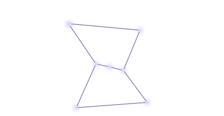
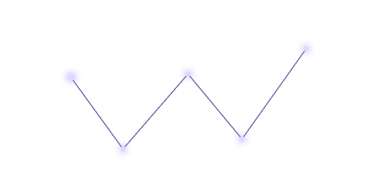

El cazador
Orión ↗
Busca las tres estrellas de su cinturón. Betelgeuse y Rigel marcan sus extremos.
Cielo ecuatorial · Cinturón de tres estrellas
Descubrir / Constelaciones
El atlas de la noche
Aprende a reconocer las figuras del cielo y las historias que las unen. Un mapa para orientarte, una invitación a mirar más allá.
88 regiones del cielo / Infinitas historias

Orión · El cazador
Una de las figuras más reconocibles del cielo.
Los trazos son esquemáticos: las constelaciones no son grupos de estrellas físicamente unidas.
08 constelaciones para empezar
El cazador
Busca las tres estrellas de su cinturón. Betelgeuse y Rigel marcan sus extremos.
Cielo ecuatorial · Cinturón de tres estrellas

Una brújula natural
El Gran Carro es parte de esta constelación. Sus estrellas ayudan a localizar la Polar.
Cielo boreal · El gran carro

La reina del cielo
Cinco estrellas brillantes forman su famosa W. Una figura ideal para empezar a reconocer el cielo.
Cielo boreal · Su inconfundible W
01
Busca estrellas brillantes y un patrón sencillo. Orión es un buen comienzo cuando está visible.
02
En el norte, el Gran Carro ayuda a encontrar la Polar. No es la estrella más brillante.
03
La latitud, la estación y la hora cambian qué constelaciones aparecen sobre ti.
Sigue explorando
Descubre cómo nacen, brillan y evolucionan las estrellas.